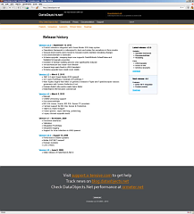
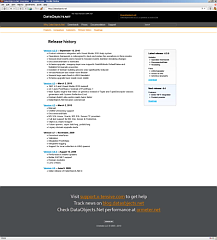

The making of dataobjects.net website
dataobjects.net
Release date
October 29, 2010
Head of development team
Dmitri Maximov
Web designer, layout man and storyteller
Sergey Yakunin
Participants
Dennis Kryutchkov, developer
Alexander Yakunin, supervisor
Alexander Ustinov, supervisor
At the beginning there was
just a few pages
on company’s website. The main task was to make a separate website for a product. Another
task was to come closer to users and put all the material (documentation, forum, news, support
and polls) in one place. As a result of several discussions we have adopted a new
plan. The Bitbucket repository was created. Then we made several schemes to reveal overall
structure of the forthcoming website.

Layout stage
In the next two weeks I created in Indesign several basic layouts for
main page. Simultaneously I was working on adaptation of logotype for new website. Suddenly we got
this layout. Indesign, Photoshop, Illustrator, then again Indesign… Here is the brief evolution of main page:
{kind=link}


Evolution of the inner page and navigation:
 

Finally, we ended up with this and this.
Programming stage
I made HTML and CSS templates based on Indesign’s
layouts. We attached them to ASP.NET website using masterpages and controls.
Dreamweaver, Visual Studio, Tortoise hg, Firebug and many other tools were widely used. We deployed
website on the hosting.
Testing stage
In next two months the website was actively tested. In this period we made many minor improvements. We
reworked footer, added facebook button, news feeds and many more.
Addons stage
Next I made a skin for
documentation microsite. We utilized our own
Help Server
for this task.
We decided to use
OSQA for
support section. Previously used annoying phpbb-based forum was swept out. I made a custom Stackoverflow-like
theme. I also had to make a custom theme for
our blog.
I created several banners for Adwords campaign, a splash image for installer, a row of icons
for
IDE integration tool and other small things. I had to improve Google
Analytics’ tracker in order to track visitors over multiple domains.


Stats
There are 161 revisions and 42 MB of files in repository. Folder properties on
my machine (without repo):

Good work!